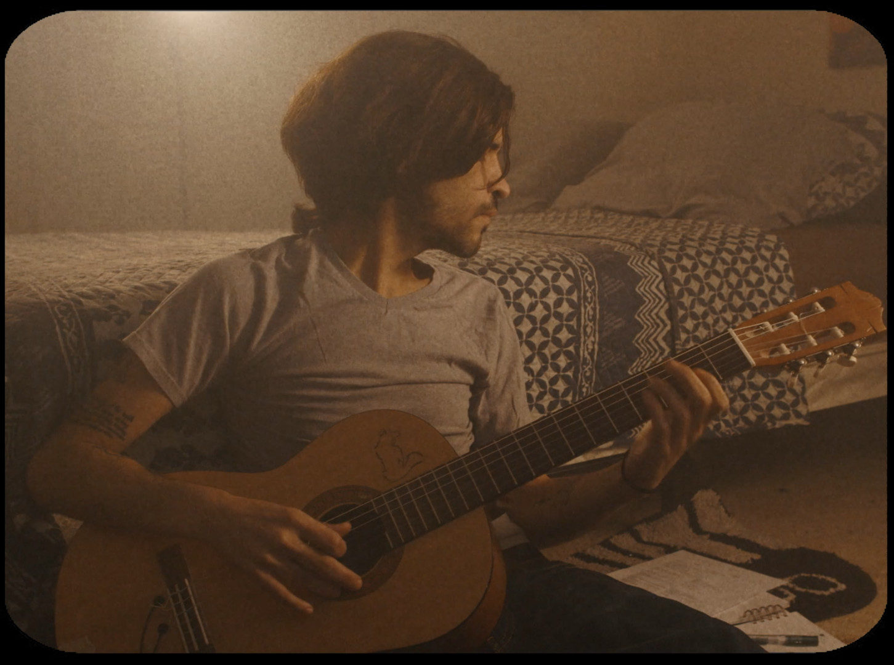

Now in its 2nd year, New Faces New Voices is changing the cinematic landscape by supporting the next generation of filmmakers, Web/TV creators and Screenwriters. NFNV is determined to showcase inclusive voices and diverse stories from around the world and is known for highlighting works by creators traditionally underrepresented in media, including filmmakers of color, female filmmakers, members of the LGBTQ+ and disabled communities, and military veterans.
At New Faces New Voices we are dedicated to fighting for social justice by providing a platform for new works from around the globe. We have supported our winners with over $10,000 in prizes and distribution opportunities sponsored by Final Draft, Bowery Film Festival, Screenblade, Katra Film Series, 3636 Studio, and International Screenwriters Association. We also continue to highlight and promote the accomplishments of our creators long after their screening is over, such as our recent alum Leah Kreits who can now be seen in the upcoming NETFLIX series
“Dash and Lily.”
HiO is not your average store. We are an international retail community featuring exclusively curated European brands in the U.S. Our assortment is always evolving so you’ll always find something new.
It’s a new adventure with each visit. That’s why we named it HiO – Latin for amazing – because you’ll be amazed every time.
In our store you will discover handpicked and exclusive brands from around the world. With access to over 250 brands, our stores will feature a range of eclectic items curated around different themes.
FOOTPRINT is a community of real-life creators and storytellers where you can immerse yourself in high-quality scripted series, unscripted shows, documentaries, film and music. You can watch us anytime and anywhere since we are on all the glowing screens. Come for a minute or stay awhile – we’ll make sure there is always great content for you to enjoy!
A Beginner's Guide To Quarantine from a Born-Again Optimist
by Kristyna Archer
Life in quarantine has taken a mental toll on every one of us, and optimism takes practice to sow the seeds of hope in dark times. This film shares some tried and true quarantine survival tips from a born-again optimist, filmmaker Kristyna Archer.
In a small, nondescript highschool, a new student arrives. As the students bustle around talkatively, the teacher quiets them down to introduce the new arrival. His name is Sam, and he is deaf. This animated short explores the anxieties, heartbreaks, and friendships Sam experiences.
Unveiled
by Sofia Bajwa
Unveiled is a short documentary told from the perspective of two teenage, Muslim girls who seek to shatter the false reputation and connotation that the hijab carries in Western society. While the media often demeans Muslim women by recognizing the hijab as an oppressive force, the girls ultimately unveil the truth that the media often overlooks.
I Hate This Fkn Job
by Monique Berkley
Naima Ali diligently applies herself to her career as a young journalist. She desires nothing more than to be recognized as one of Winning Magazine’s leading employees. Aligned with commitment, a high-leveled skill set and an unstoppable work ethic, Naima’s talents still somehow do not begin to scratch the glass ceiling.
It’s 2020 and while COVID-19 pandemic is making huge changes in our lives and perspectives, a quarantined pregnant woman needs to struggle against a whole system to have the birth that she wants to have.
A story about a lonely girl's experience of looking for a room in NYC, and her bittersweet mood after witnessing people’s inevitable but understandable selfishness.
White Mirror: The Color Red
by Samuel-Taylor Augustin
An artist tries to alleviate his depression through painting, only to be confronted with the reality that he'll always be seen as a monster in the eyes of White Fear.
Pool Party
by Polina Buchak
Marked with a significant scar on her stomach, Nika prefers to remain unnoticed, until a pool party invitation pushes her to confront all her insecurities.
After leaving his phone in a cab, a millennial New Yorker accepts a bet from two friends that he can't make it through an entire weekend without his device, forcing him to look up and enjoy life untethered from his screen.
A cautionary tale of Six “geniuses” who attempt to summit Mother Natures most angry daughter, but settle for the pinnacle of stupidity.
Grandma/Obāchan
by Cora K. Hasegawa
A deeply personal animated documentary exploring the lives of the director’s two grandmothers, as well as the losses that affected her family and shaped her personal and cultural identity.
Sleepless
by Gabriela Lima

A music video inspired by abusive and controlling behavior between partners and how it leads to only pain.
Moto Mukti
by Keoni K. Wright
Following a lengthy battle with testicular cancer, filmmaker Keoni K. Wright finds spiritual inspiration in the wheelie-riding-dirt biker patrolling his Brooklyn neighborhood.
Hair
by Frances Wilkerson
This mo-cap music video is a unique celebration of texture, movement and dance.
The Test
by Noreen Quadir & William Hui
When a young couple discover that they're pregnant, they argue over how to deal with their situation and what their future looks like.
The night before Olivia is set to leave her small hometown for Dublin with her new Irish boyfriend, she finds herself torn between the intoxicating promise of a new life and the bonds that tie her to home.
Inspired by a real self-help book of the same name, "The Newlywed's Guide to Physical Intimacy" follows a newlywed Hasidic couple who arrive home on their wedding night. The trouble is, no one ever taught them what comes next.
Lizzy, a high school student with divorced parents, goes to visit her dad for July 4th. Despite her efforts, their differing personalities and life choices inhibit them from connecting the way Lizzy has always dreamed about.
Permission by Joe Capucini
A highly successful married couple must deal with unimaginable tragedy from their past when presented with opportunity for their future.
Reflections by Cynthia Wright
After serving in Vietnam, a young black nurse returns home to Detroit, where she has to confront the life she ran from as she grapples with the woman that she’s become.
Feature Screenplay Finalists
Undercurrent by Debby Huvaere
The disappearance of a young boy in the Township of Montclair, New Jersey, reveals an array of raw emotions that have been brewing underneath the surface of suburban life.
Supposed To Be by Beth-Anne Blue
In purgatory after an attempt to take her own life, a young woman must decide if her life is worth fighting for with the help of an unlikely healer.
Take Me Home by Marisa Torelli-Pedevska
Stella is a seventeen-year-old in Cape Cod who has ordinary dreams: She wants to go to college far away from her family. But Stella’s family is anything but ordinary. Her two sisters, Denny and Julia, are both on the autism spectrum. When their mother finds out her cancer has returned, Stella’s dreams flash before her eyes. She has to do something she’s never done before: step up and be there for her family—especially her two sisters—who need her now more than ever. As Stella navigates this shifting reality, she also deals with her feelings for a new girl on her swim team who happens to be her biggest competition. Take Me Home is a coming-of-age story about a teenager who learns that she truly needs exactly what has been in front of her the whole time. Stella and her family force us to reconsider what it means to be “normal,” allowing us to explore the beautiful spectrum that is autism and showing us how siblings with special needs can shape a family.